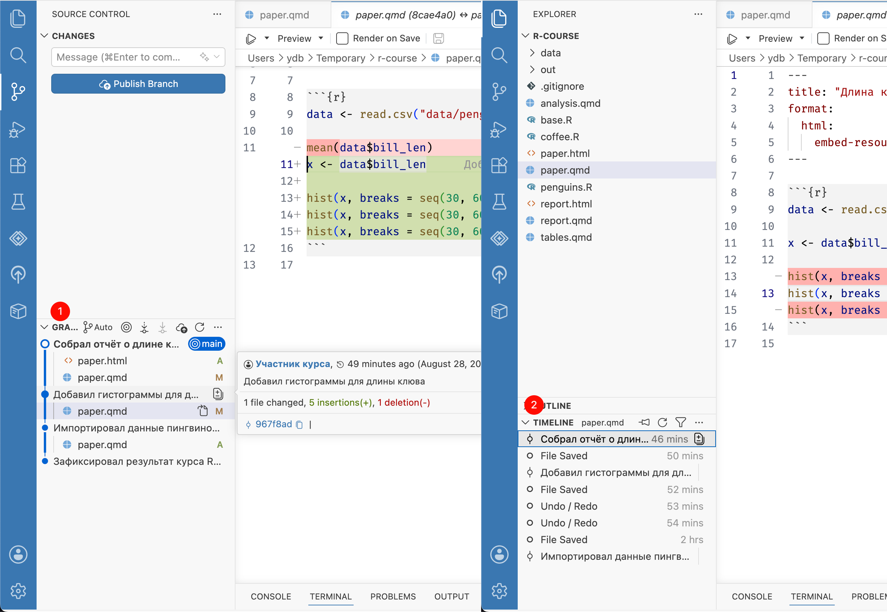

Глава 8 Просмотр истории
До этого мы просматривали изменения только по сравнению с последней версией в момент создания коммита. Предыдущие коммиты можно посмотреть в журнале (log).
Журнал позволяет изучить изменения от других участников или вспомнить свои собственные, и зачем они сделаны. Поэтому так важно писать ясные и содержательные описания коммитов. Используя журнал, можно найти, когда сделаны изменения, приведшие к ошибке, и вернуть проект к предыдущему состоянию. В конце концов, его можно использовать для отчетности и бизнес-аналитики по проекту.
Чтобы открыть журнал, на панели Source Control разверните раздел Graph внизу. В открывшемся окне выводится список коммитов в обратном порядке — последние коммиты находятся вверху.
При наведении на коммит появляется краткая информация: имя автора, которое мы указали в настройках, дата и описание, и самое важное — хэш коммита, его уникальный идентификатор. В примере это 967f8ad, у вас он будет другим.
Кликните на коммит, чтобы посмотреть список изменений. Выберите файл, чтобы открыть дифф — изменения, сделанные в этом коммите по сравнению с предыдущей версией.

Если нужна история только одного файла, выберите его на панели Explorer и откройте раздел Timeline внизу той же панели. Выберите коммит, чтобы посмотреть изменения. В разделе Timeline также есть автоматические контрольные точки, которые создаются при сохранении файла. Они не входят в Git-репозиторий и исчезнут через некоторое время.
Даже если вы работаете в одиночку, полезно иметь под рукой историю изменений. Но по настоящему эта функция полезна, когда приходится работать с несколькими версиями одновременно, например при работе в команде. Об этом далее.